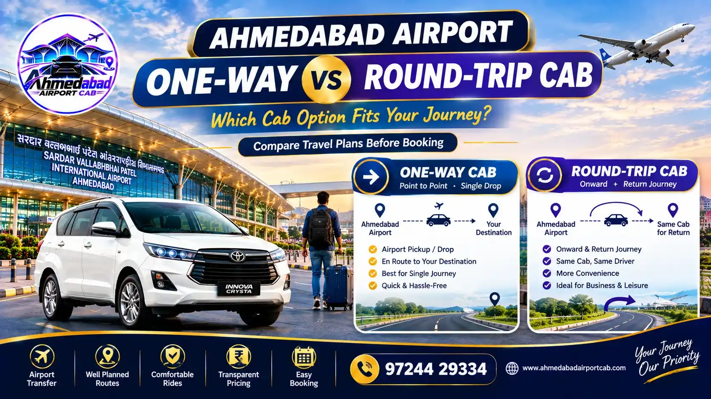

BLOG 01
Ahmedabad Airport Cab Service: Complete Guide to Airport Taxi Booking
Looking for an Ahmedabad Airport Cab? Learn about airport pickup, airport drop, booking, vehicle options, fares and airport transfers.
Read guidePractical guides for Ahmedabad Airport pickup, airport drop, fares, local transfers, outstation routes, family travel and online cab booking.
Looking for an Ahmedabad Airport Cab? Learn about airport pickup, airport drop, booking, vehicle options, fares and airport transfers.
Read guideLearn how to book an Ahmedabad Airport Taxi for pickup, drop, hotel transfer, city travel and outstation airport journeys.
Read guideBook an Ahmedabad Airport Pickup Cab with flight details, passenger information and destination. Complete guide for airport arrivals.
Read guidePlan your Ahmedabad Airport Drop Cab with the right pickup time, vehicle and route. Complete guide for airport departure transfers.
Read guideNeed an Ahmedabad Airport to City Cab? Learn about airport transfers to homes, hotels, offices and major areas of Ahmedabad.
Read guideBook an Ahmedabad Airport to SG Highway Cab for hotels, offices, homes and business travel. Learn what to confirm before booking.
Read guideNeed an Ahmedabad Airport to Gandhinagar Cab? Learn about airport pickup, hotel transfers, business travel and airport drop booking.
Read guidePlanning Ahmedabad Airport to Vadodara travel? Learn how to book an airport-origin cab for one-way or round-trip journeys.
Read guideNeed an Ahmedabad Airport to Surat Cab? Learn how to plan an airport-origin taxi, choose a vehicle and confirm one-way or round-trip terms.
Read guideBook an Ahmedabad Airport to Rajkot Cab for one-way or round-trip travel. Learn what to confirm before an airport-origin outstation journey.
Read guideLooking for an Ahmedabad Airport to Anand Cab? Learn about airport pickup, one-way travel, family transfers and booking details.
Read guidePlan an Ahmedabad Airport to Nadiad Cab for airport pickup, one-way travel, family trips and return airport transfers.
Read guidePlanning Ahmedabad Airport to Statue of Unity travel? Learn how to book an airport cab to Kevadia, plan luggage and choose one-way or return travel.
Read guidePlanning an Ahmedabad Airport to Dwarka Cab? Learn how to arrange airport pickup, choose one-way or round-trip travel and plan the journey.
Read guideBook an Ahmedabad Airport to Somnath Cab for pilgrimage and family travel. Learn about one-way, round-trip and airport pickup planning.
Read guideLearn what affects Ahmedabad Airport Cab fare, including distance, vehicle type, one-way travel, tolls, parking and waiting charges.
Read guide
Compare one-way and round-trip Ahmedabad Airport Cab bookings and learn which details to confirm before airport travel.
Read guide
Travelling with family from Ahmedabad Airport? Learn how to choose an airport cab based on passengers, children, luggage and trip type.
Read guideNeed an early morning or late night Ahmedabad Airport Cab? Learn how to plan airport pickup and drop when your flight is outside normal hours.
Read guideLearn how to book an Ahmedabad Airport Cab online for pickup, drop, city transfers and outstation travel with a simple checklist.
Read guide